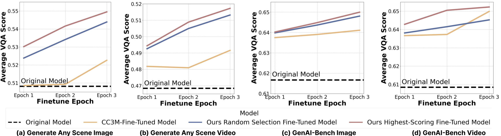
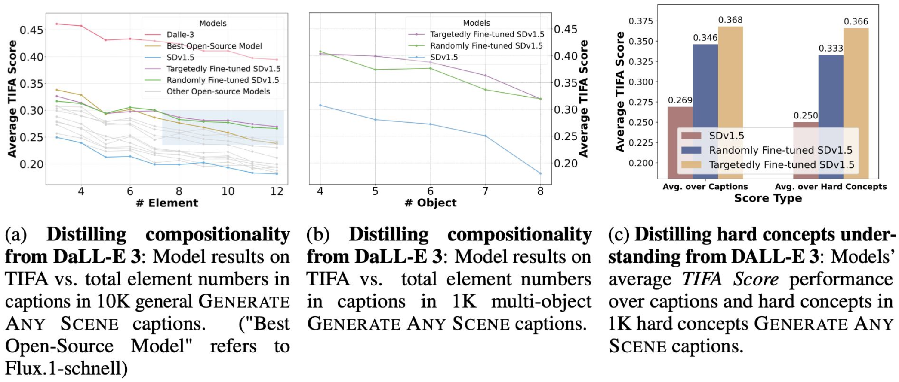
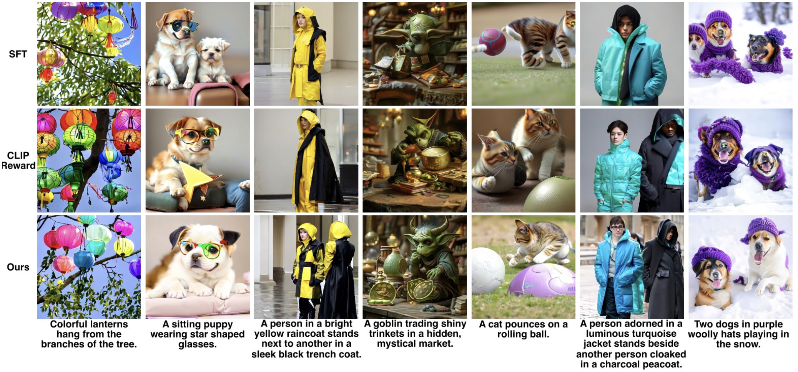
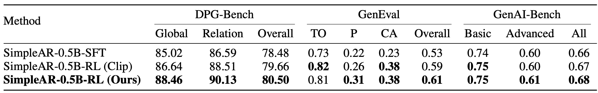
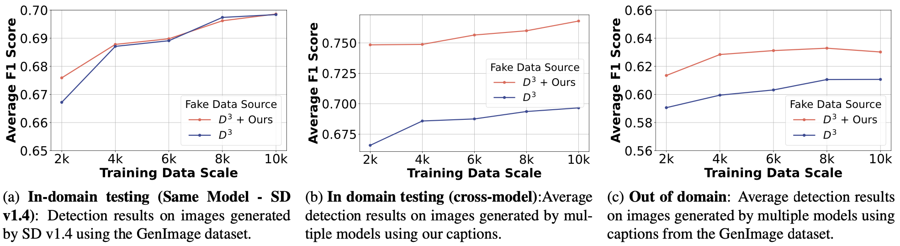

Summary of the quantities and sources of visual elements:
Applications
1. Self-Improving Models

GAS-generated captions can be used to iteratively fine-tune a model on its own synthetic distribution. Applying this loop to Stable Diffusion v1.5 yields approximately 4% improvement in compositional quality over the pre-trained baseline, and surpasses fine-tuning on the real-image CC3M dataset — without any human-annotated data.
2. Distilling Targeted Capabilities


GAS enables targeted capability transfer from strong models to weaker ones. Using GAS-structured prompts, we generate fewer than 800 synthetic image-caption pairs from DALL-E 3 and fine-tune SD v1.5 on them. This compact distillation achieves a ~10% improvement in TIFA score on compositional generation tasks — demonstrating that structured synthetic data is highly efficient for closing compositional gaps.
3. Reinforcement Learning with Synthetic Reward


Scene-graph QA pairs from GAS serve as verifiable reward signals for reinforcement learning with GRPO. Applied to SimpleAR-0.5B-SFT, this approach achieves a improvement on DPG-Bench compared to CLIP-based reward methods — highlighting that structured, interpretable rewards derived from scene graphs are more effective than perceptual similarity metrics alone.
4. Generated-Content Detection

GAS synthetic data can train detectors that distinguish AI-generated images from real ones. A lightweight ViT-T detector trained on GAS-generated images improves F1 scores across both cross-model and cross-dataset evaluation scenarios, demonstrating that controlled, diverse synthetic data is a reliable resource for content provenance and moderation tasks.